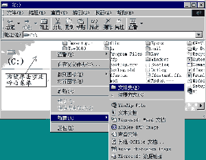
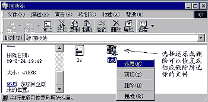
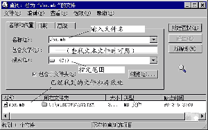

|
|
| 当前位置：电脑报电子版 > 1999 年 > 34 期 > 综合报道 > 走进Windows98（中） |
| 《 走进Windows98（中） 》 |
| 电脑应用中文件的管理是首先接触到的基本操作，文件的管理具体内容有：文件或文件夹的建立、拷贝（复制）、移动、删除或恢复删除等。以下就从“文件”开始介绍一下电脑中对文件的管理操作。 一、Windows 98中的文件 学习文件的管理，首先应该了解什么是文件、文件夹和路径。 1.文件和文件夹 文件是电脑存储在磁盘或其它存储设备上的一组信息，这组信息可以是程序，也可以是一篇文章或一组数据。由于在存储设备例如磁盘上保存了很多这样的文件，为了方便管理电脑中就引入了“文件”、“文件夹”、“盘符”以及“路径”等专业术语。 其中盘符就是我们常说的C盘、D盘、A盘等代表磁盘或光驱等驱动器的符号。文件夹则相当于DOS下的目录，就好比一个公文包，里面可以保存各种文件。如果我们在目录中再建一个目录，就像一个大公文包中又放进了一个小公文包。打开一个个公文包，就找到了放在里面的文件。在DOS下，目录中的目录被称为子目录，在Win 98中自然也就将文件夹中的文件夹称为子文件夹。 2.根目录和路径 在DOS中将盘符下的第一级目录位置称为“根目录”，如C盘的根目录就用“C:\”表示。在Win 98中与此对应的概念为“根文件夹”。在根文件夹中既可以存放文件，也可以建立多个子文件夹。 为了描述文件存放的位置，从DOS时代就引入“路径”这一概念。假如我们要在Win 98中找到写字板程序notepad.exe，就必须依次打开C盘根文件夹和“Windows”文件夹。在DOS中就用“C:\windwos\notepad.exe”来描述这个文件的路径。 3.文件的命名规则 文件和文件夹的命名必须遵循一定的规则。文件名由主名和扩展名组成，格式为：“主名·扩展名”，其中主名和扩展名的长度以及允许使用的字符都有一定的限制。例如在DOS中规定文件名的主名不得超过8个字符，扩展名不得超过3个字符，所以叫8·3制，而在Win 98中只要文件的主名和扩展名的总长度不超过256个字符就行。扩展名反映了文件的类型，一般根据扩展名就能大致看出文件的性质。常见的扩展名有com和exe（程序文件），doc（Word文件），txt （文本文件）,bmp （位图文件）等。 二、文件的管理 在Win 98中对文件的管理可以使用“我的电脑”也可以使用“资源管理器”，其中“我的电脑”是Win 98中重要系统工具，功能很强，所以我们首先介绍用它对文件进行管理的操作方法。 在文件的管理中，文件和文件夹的操作方法基本相同，所以对文件的拷贝、删除、移动或重新命名等操作方法对文件夹同样有效。 1.建立文件 建立文件是指在磁盘上新建文件。例如我们要在C盘根目录下建立一个“FILES”的新文件夹（目录），其具体操作如下： 第一步，双击桌面上“我的电脑”图标，出现“我的电脑”窗口。 第二步，在“我的电脑”窗口中双击硬盘C：的图标，打开C盘。 第三步，在窗口中任一空白处单击鼠标右键呼出快捷菜单，选择快捷菜单上“新建”→“文件夹”(图1)。在窗口中将出现一个名为“新建文件夹”的新文件夹，并且该名字处于等待编辑状态，输入“FILES”，然后回车。这样就建立了一个名为“FILES”的新文件夹。 与此相同，如果在快捷菜单中选择新建某类型的文件，则在此文件夹中新建一个文件。 建立文件的操作要点可简述为： 选择盘符及文件夹＋快捷菜单＋新建文件或文件夹 2.拷贝文件 拷贝文件就是将某一文件复制一份到另外一个文件夹里，这个文件夹可在同一盘符，也可在另外的盘符上。例如我们需要将软盘上的一个文件“c－1.txt”拷贝到C盘的“FILES”文件夹中，那么具体操作如下： 第一步，将保存有文件“c－1.txt”的软盘插入软驱后，双击“我的电脑”中的“3.5英寸软驱（A）”，打开A盘，然后选择“c－1.txt”文件，单击右键呼出快捷菜单，再单击其中的“复制”。 第二步，单击工具栏中的“退回”按钮返回，双击C盘图标，打开C盘根目录窗口。 第三步，打开“FILES”文件夹，然后在窗口中任一空白处单击鼠标右键呼出快捷菜单，然后单击快捷菜单中的“粘贴”，此后系统自动将A盘的文件“c－1.txt”复制到C盘的“FILES”文件夹内。 如果要将C盘上的某文件拷贝到软盘上，操作就简单得多了。只需在要拷贝的文件上单击鼠标右键呼出快捷菜单，然后选择“发送到”→“3.5英寸软驱（A）”，就可以将文件拷贝到软盘上。 以上拷贝文件的操作要点可简述为： 选择文件＋复制＋粘贴 3.移动文件 文件和文件夹的移动操作也很简单，具体操作步骤与拷贝文件的过程很相似，但在选择需要移动的文件时使用的操作是“剪切”而不“复制”。例如，我们将C盘上文件夹“FILES”移到D盘。先在C盘上找到文件夹“FILES”，然后在“FILES”文件夹上单击右键呼出快捷菜单，选择其中的“剪切”，这时可以看到所选文件夹图标颜色变成灰白。然后再打开D盘，在D盘窗口空白处单击右键呼出快捷菜单，然后选择其中的“粘贴”完成文件夹“FILES”的移动，同时C盘上的原文件夹“FILES”被删除。 所以文件的移动操作要点可简述为： 选择文件＋剪切＋粘贴 4.文件的重新命名 先打开相应的文件夹，选择需要重新命名的文件后单击右键呼出快捷菜单，选择其中的“重命名”，然后被选中的文件将处于等待编辑状态，此时可输入新的文件名，然后回车或单击鼠标左键即可完成文件的重命名。 操作要点简述： 选择文件＋快捷菜单＋“重命名”＋修改文件名 5.文件的删除 在Win 98中删除文件时并没有将文件真正从磁盘上删除，而是将删除的文件放入了回收站，以后可在回收站中选择将文件恢复或者从磁盘上彻底删除。下面我们准备将C盘上文件“mod.zip”删除，具体操作如下： 通过“我的电脑”打开准备删除的文件所在磁盘C：，然后用鼠标找到文件“mod.zip”后单击右键呼出快捷菜单，选择其中的“删除”，然后在弹出的对话框中选择“是”，则文件被移动到回收站。如果需要，以后我们可以通过“回收站”将其恢复。 如果想直接将文件彻底删除，可以在删除时同时按下键盘上的“Shift”键，然后确认，但这样比较危险，一旦删错文件就很难挽回，所以建议不要这样做。 操作要点简述： 选择文件＋快捷菜单＋删除 6.文件的恢复 由于我们删除文件时只是将所选择的文件或文件夹送入了回收站，所以如果需要恢复某一删除的文件，如“mod.zip”文件，就可以通过回收站进行。 具体操作方法是： 第一步，双击Win 98桌面上的“回收站”图标，打开了回收站窗口。 第二步，选择回收站中的“mod.zip”后单击右键，呼出快捷菜单，选择其中的“还原”后系统将文件“mod.zip”恢复到原来的文件夹下，同时回收站中的“mod.zip”文件图标消失。 恢复删除文件的操作要点简述： 打开回收站＋选择文件＋还原 7.查找文件 忘记文件存放的位置是常有的事，这时可以使用“查找”功能进行寻找，例如我们想找出文件“wbx.mb”，那么具体的操作是： 第一步，打开“我的电脑”随便选择一个盘符后单击右键呼出快捷菜单，选择其中的“查找”，屏幕出现文件查找窗口。 第二步，“查找”窗口中缺省查找条件为“名称和位置”，我们在“名称”输入框中输入文件名“wbx.mb”，在“搜索”下拉列表框中选择查找范围，然后单击“开始查找”，此后在窗口下部状态栏中不断显示搜索路径。如果找到，则显示文件路径及属性。 以上查找文件的操作要点可简述为： 打开“我的电脑”＋右击盘符呼出查找窗口＋输入查找条件＋开始查找 在Win 98中对文件的管理操作基本上是以上几种，方法也不复杂，只要我们多练习几次，相信就是以前没有接触电脑的朋友也很快能掌握。 （李肖峰） |
| 下载本期推荐软件 | 页 首 |
| 《电脑报》版权所有，电脑报网站编辑部设计制作发布 |